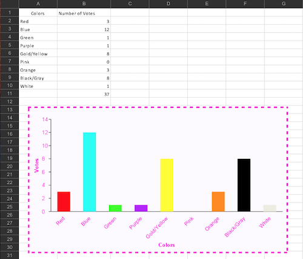
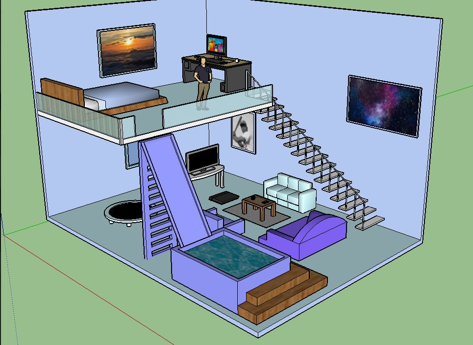

6th Grade
Introduces you into Typing ,Microsoft Word ,Microsoft ,PowerPoint ,Microsoft ,Xcel, Internet SafetyGoogle ,and Business Apps.


7th Grade
Introduces you into SketchUp, Karel, Illustrator, Photoshop, FloorPlanner, and Photography.

8th Grade
Introduces you to CSS and HTML code.
Reflection of the Program
The program is good experience for your future and your job. It gets you interactive with technolgy. Not alot of people know how to type fast or do alot of hacks on computers. But in ATM you learn it all. I am glad I took this elective.